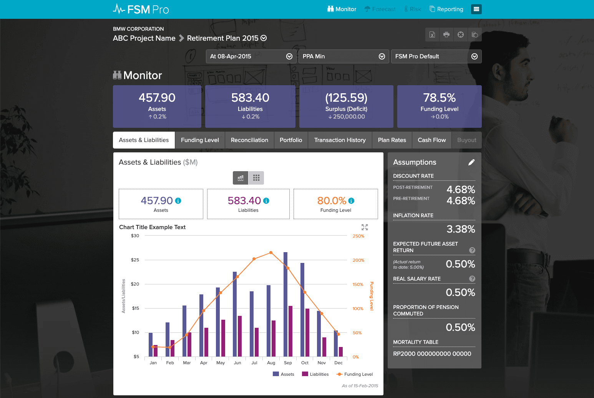
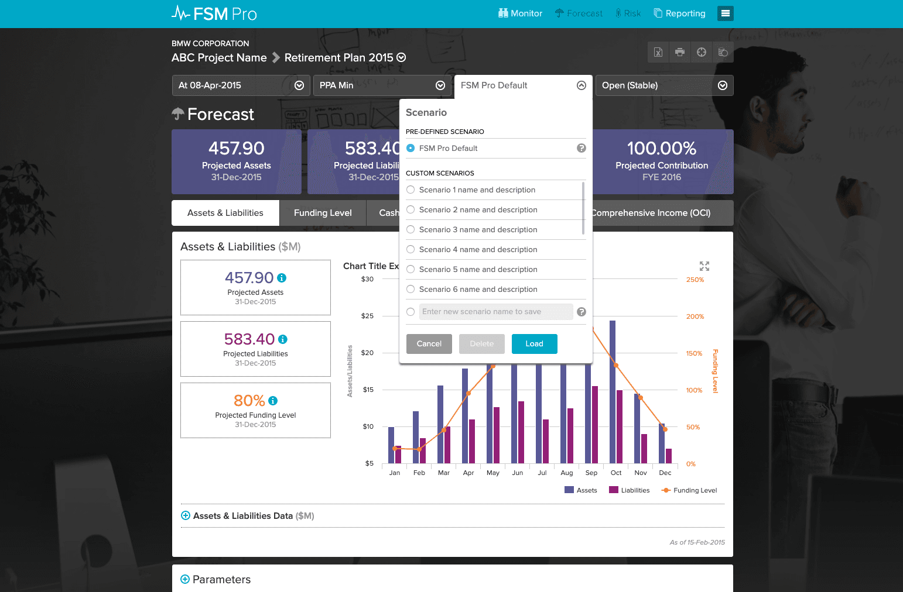
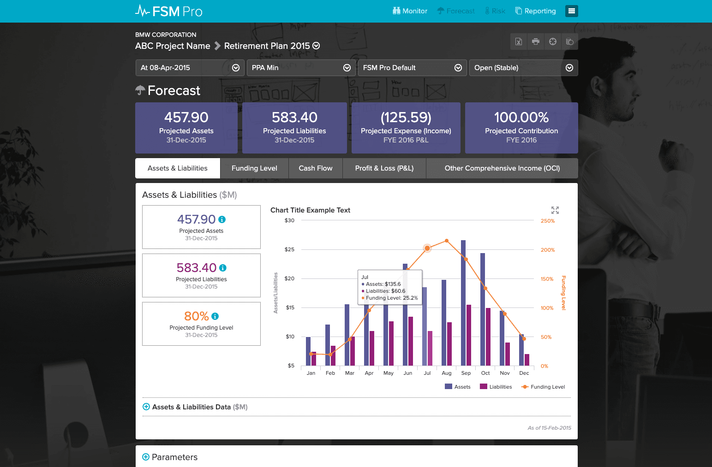
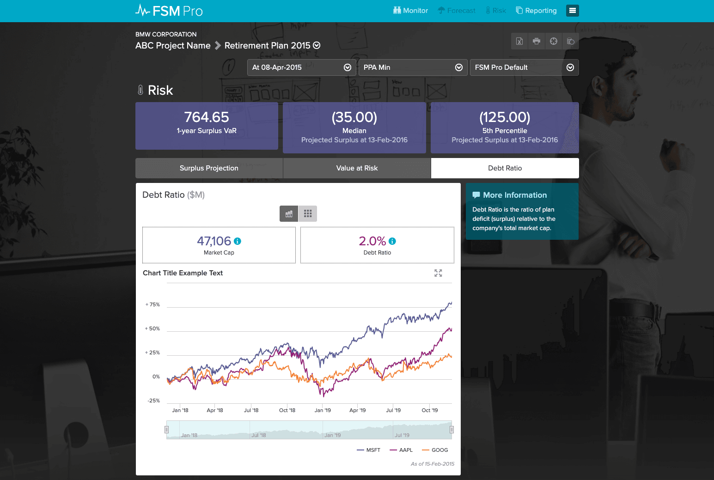
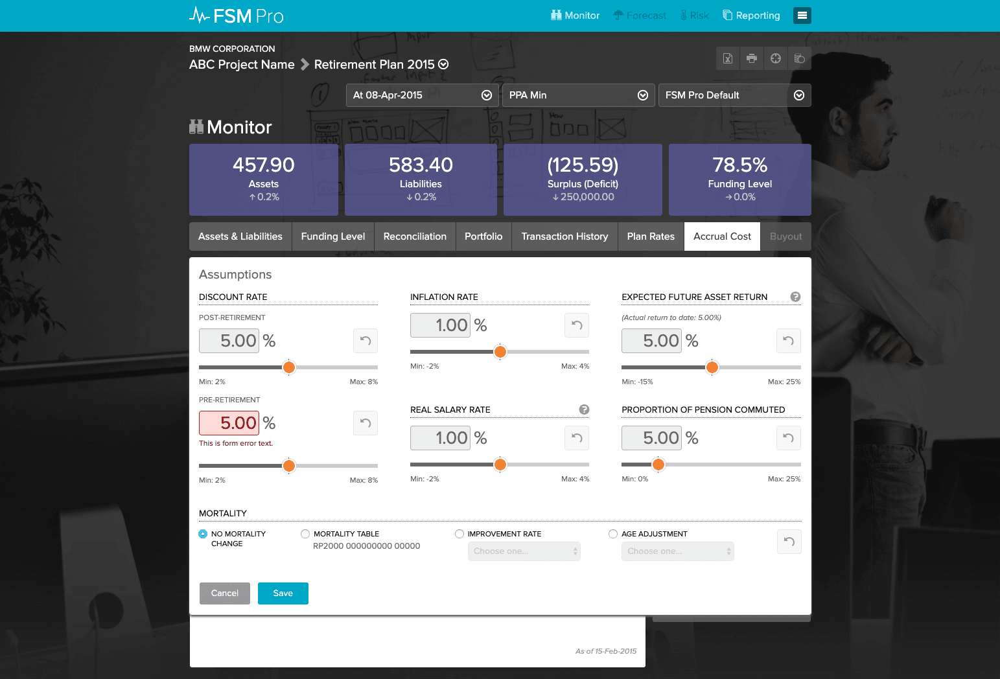
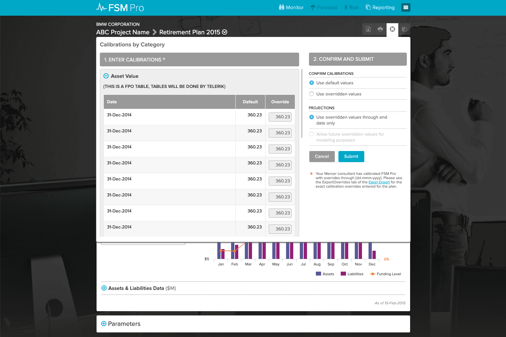
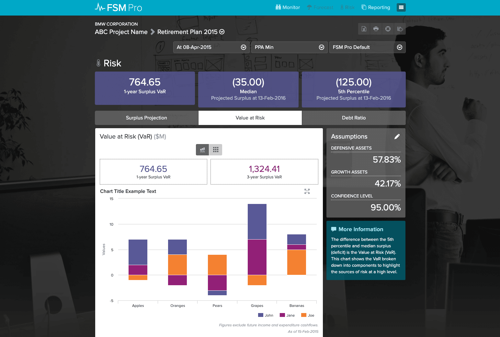

Lead UI Designer & Developer
1 UX Designer and 1 UI Designer
4 Months
Went live into production
Redesign of product that was originally a native iOS app. Use of highcharts.js for charting.
To redesign the user interface and work flows for the end user to compete with other products on the market. The redesign effort was to bring a more modern design look and feel to the product.
Product redesign was well received and was completed on time and on budget.






